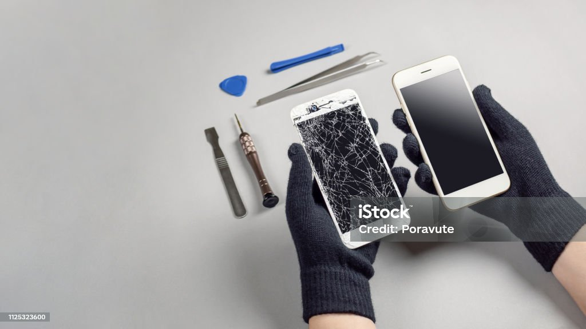
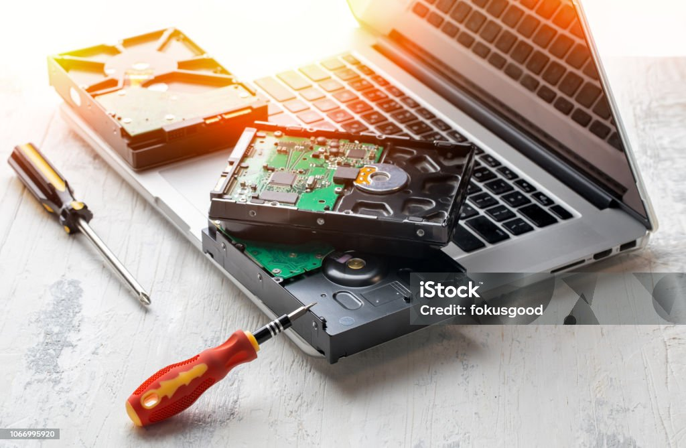

Our Services
Phone Repairs
We take pride in our work and in delivering the best possible results in a short timeframe. All of our phone screens and batteries are high quality. You have your choice of Samsung, Apple, and Motorola original parts or aftermarket parts.
All of our work is guaranteed by a 1 year store warranty. As long as there is no physical or liquid damage to the phone we can try installing another part at no cost to you!
Video Game Console Repairs
Whether you dropped your gaming console or the hdmi port has gone bad, bring your console to us! We have over a decade of experience and a ton of skills between our technicians. We can solder a new port onto your console or we can replace an integrated circuit altogether.
Any repair we attempt comes with a thorough cleaning whether the device can be fixed or not. This means removing any lint, dust, hair, bugs and anything else inside the device. It also means we remove the old thermal paste and replace it with top of the line Artctic MX-4 Premium thermal paste. Over time the thermal paste, which dissipates heat from the central processing unit (CPU), will dry out. Replacing it will not only make your device run faster and cooler but will also increase the longevity of the device.
Laptop and Desktop Repairs
We understand the necessity of modern computers. Being without your computer can not only leave you in the dark but it can also impact your day to day life. We are proud to be one of the faster repair shops for complex devices like laptops and desktops. Most repairs can be done within an hour, some even shorter than that.
Repairs
We have many common parts in stock for Apple and Windows laptops such as screens, batteries, keyboards, and palmrests. Not only do we have the parts for newer models but older models from the early to 2000s to the late 2010s.
Data Recovery
Need your data recovered? We can help! Our lead technician trained with the best data recover professionals and no job is out of our capability. From hard drive disks to solid state drives, if there is data to be restored we can restore it!